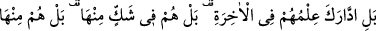
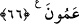
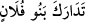

da Allah’tan başka kimse bilmez.” diye cevapladı.”
Gülistân’da şu hikâye aktarılır: Bir müneccim evine geldi, karısıyla oturmuş yabancı
bir adam gördü. Küfretti, sövüp saymaya başladı. Fitne ve karışıklık meydana geldi.
Gönül eri birisi duruma vâkıf olunca şunları söyledi:
Ne ararsın semâda ey sersem adam
Daha sen evinde olandan habersizsin
66. Hayır; onların âhiret hakkındaki bilgileri yetersiz kalmıştır. Dahası, bu
hususta şüphe içindedirler. Bunun da ötesinde, onlar ahiretten yana kördürler.
“Hayır; onların âhiret hakkındaki bilgileri yetersiz kalmıştır.”
el-Kâmûs’ta der ki: “Yâni âhiretin ilminden câhil kaldılar bilmediler. Onun hakkında
bigileri yoktur.” Bu, Hasan Basrî’nin görüşüdür. Hakikati ise şudur: Onların âhirete
kavuşma hakkında ilimleri sona erdi de onu bilemediler. Nitekim el-Müfredât’ta böyle
geçmektedir.
Bazıları demiştir ki: Bir kimsenin oğulları peş peşe helâk olunca “
”
dedikleri gibi âyetin mânâsı, ‘Onların âhiret hakkındaki bilgileri peş peşe, ard arda yok
oldu ve nihâyet ortadan kalktı.’ demektir. Bu, bilme sebeplerinin desteğine rağmen
onların yeniden diriltilmenin vakti konusundaki cehâletlerini beyandır.
Mânâ ise şöyledir: Onların âhiret hakkındaki bilgileri, birbirini takip edip nihâyet
tükendi. Âhirette kesin olarak vuku bulacak şeyler hakkında bile bilgileri kalmadı.
Fakat bu söz, onların bu konuda hakîkate uygun bilgileri olup da yavaş yavaş yok
olduğu anlamında değildir. Bilakis ilmin sebeplerini ve dayandığı aklî ve sem’î
delilleri ilmin kendisi yerine koymak ve kendilerince îtibardan düşenleri gördükçe
onları peşpeşe yok olmuş saymak sûretiyle mecaz yoluyladır. İlim sebeplerini ilim
yerine koymak, öteden beri benimsenen bir yoldur.
Sonra Allah Teâlâ onların âhiretle ilgili bilgilerini açıklamayı bırakıp bundan daha
kötüsü olan onların bu husustaki şaşkınlık ve tereddüdlerini açıklamaya geçerek şöyle
buyurdu:
“Dahası, bu hususta” onlar bir konuda şaşkınlığa düşüp onunla ilgili gelecekte
olacak hususlar bir tarafa kendisi ile ilgili delil bulamayan kimse gibi âhiretin bizzat
kendisi ve gerçekleşmesi konusunda “şüphe içindedirler.”
Sonra Allah Teâlâ bunu da bırakarak, onların içinde bulunduğu şüpheden daha şiddetli
ve kötü hâllerini açıklamaya geçerek şöyle buyurdu:
“Bunun da ötesinde, onlar âhiretten yana kördürler.” Basîretlerinin tamamen